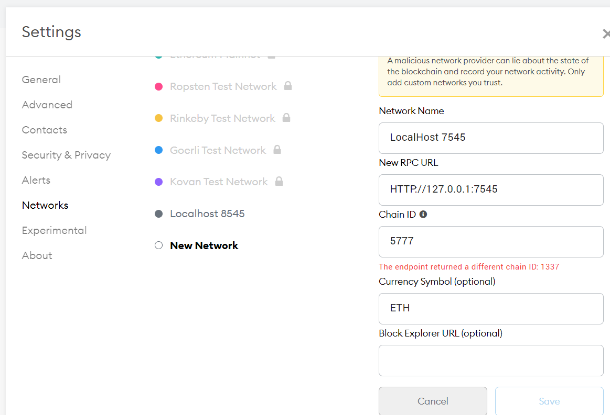
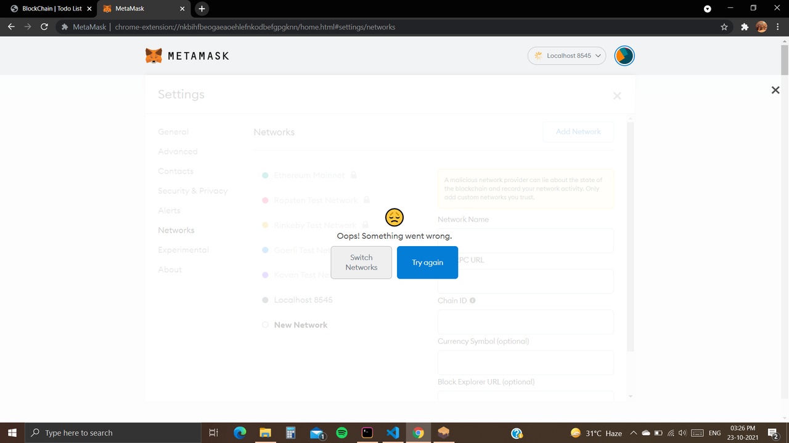

Metamask is not connecting my blockchain network
I'm building a todoList Web-App using blockchain. I'm stuck when I tried to
connect the blockchain server to metamask. When I try to add new network as
mentioned in my Ganache (HTTP://127.0.0.1:7545) then I miss chainID and
When I fill the chainID with Genache network Id it shows the given error.

When I try to connect to localhost8545 then it returns this error: 
trufle-config.js
module.exports = { networks: { development: { host: "127.0.0.1", port: 7545, network_id: "*" // Match any network id } }, solc: { optimizer: { enabled: true, runs: 200 } } }
How can I connect my blockchain network with my localhost?
Answer
remove default localhost account (i.e. Localhost 8545 ) first and then add the new network with details and chain ID as 1337
Suggest
- Open metamask extenuation settings
- find there network
- click on it
- find localhost 8545
- remove it
- try create new with 1337